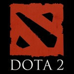
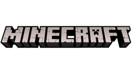

5. Roblox
Roblox is an online platform that allows users to create, share, and play games created by other users. It features a wide range of user-generated content, including mini-games, simulations,
role-playing games, and more. Roblox also serves as a development environment, giving players the tools to create their own games using its game engine, Roblox Studio.
Pros:
- Creativity and Customization- Roblox encourages creativity, allowing users to design their own games and experiences. The platform's flexibility makes it a great outlet for aspiring game developers.
- Huge Variety of Games- With millions of user-generated games, Roblox offers an endless variety of experiences, ensuring there's something for every type of player.
- Social Interaction- Roblox supports multiplayer gameplay, allowing users to play with friends or meet new people in different virtual worlds, fostering a strong social component.
Cons:
- Online Safety Concerns- Despite Roblox's moderation efforts, the platform has faced criticism for issues like inappropriate content or interactions, which can be concerning for younger
audiences without proper supervision.
- Inconsistent Game Quality- Since games are user-created, the quality can vary significantly. Some games may be well-designed, while others can be poorly made or unfinished.
4. Counter-Strike: Global Offensive (CSGO)
Counter-Strike: Global Offensive is a first-person shooter that focuses on team-based gameplay, where two teams (Terrorists and Counter-Terrorists) compete to complete objectives such as
planting or defusing a bomb or rescuing hostages. It's known for its competitive and tactical gameplay, requiring strategy, skill, and coordination. CSis one of the most popular esports titles,
with a massive player base and competitive scene.
Pros
- Highly Competitive Gameplay- Its tactical nature and skill-based mechanics create a highly competitive environment, offering satisfying depth for players who enjoy a challenge.
- Large Community and Esports Scene- The game boasts a massive community and a thriving esports scene, providing endless content, tournaments, and opportunities to play with or against others.
Cons
- Toxic Community- The competitive nature of the game can lead to a toxic player base, where newcomers or less experienced players may encounter negative behavior such as harassment or poor sportsmanship.
- Steep Learning Curve- The game has a high skill ceiling, making it difficult for new players to compete or feel comfortable, especially against veteran players.
- Frequent Cheating Issues- Despite Valve-s efforts to combat cheating, CSGO is notorious for having a significant number of cheaters, which can detract from the experience, particularly in matchmaking.
3. Valorant
Valorant is a free-to-play tactical first-person shooter developed by Riot Games. It blends elements of traditional FPS games with hero-based abilities, where players take on the role of "agents," each with unique
abilities. Teams of five compete in objective-based matches, with one team planting the bomb (spike) and the other team trying to stop them, similar to CS but with an added special abilities.
Pros:
- Strategic Depth- Valorant combines precise shooting mechanics with agent abilities, offering strategic complexity that rewards both skill and tactical planning.
- Frequent Updates and Support- Riot Games regularly updates the game with new agents, maps, and balance changes, keeping the experience fresh and addressing player feedback.
- Strong Anti-Cheat System- Valorant's Vanguard anti-cheat system is one of the most effective in the industry, significantly reducing cheating and enhancing competitive integrity.
Cons:
- High Learning Curve- The combination of tactical shooting and agent abilities can be overwhelming for new players, leading to a steep learning curve.
- Toxic Community- Like many competitive shooters, Valorant's player base can exhibit toxic behavior, especially in ranked matches, which can detract from the experience.
- Heavily Team-Dependent- Success in Valorant requires strong communication and teamwork, so solo players or those with uncooperative teammates may find it frustrating to progress or win consistently.
2. Dota 2

Dota 2 is a free-to-play multiplayer online battle arena (MOBA) game developed by Valve. In Dota 2, two teams of five players each compete to destroy the opposing team's base or so-called "Ancient,"
a structure located in the center of their base. Players control heroes with unique abilities, working together in a strategic and fast-paced environment that emphasizes coordination, skill, and map awareness.
Pros:
- Deep Strategic Gameplay- Dota 2 offers immense strategic depth, with over 120 unique heroes, items, and abilities, leading to countless possible combinations and playstyles.
- Thriving Competitive Scene- The game has a robust esports community, including the prestigious "The International" tournament, with large prize pools that inspire competitive play at all skill levels.
- Constant Update- Valve continuously updates the game with new heroes, balance changes, and events, keeping the game fresh and engaging for long-term players.
Cons:
- Extremely High Learning Curve- Dota 2 is notoriously difficult for new players to learn, with complex mechanics and a high skill ceiling that can be overwhelming without proper guidance.
- Long Match Durations- Matches can last 30 to 60 minutes or more, which may be off-putting for players who prefer shorter, more casual gaming sessions.
1. Minecraft

My Top 1 Game of All Time, saving the best for last is Minecraft. Minecraft is a sandbox game that allows players to explore a blocky, procedurally generated world, gathering resources to craft tools, build structures, and survive.
Players can engage in different modes, such as survival, where they must fend off monsters and manage resources, or creative mode, where they have unlimited resources to build and explore freely. Minecraft has both single-player
and multiplayer options, fostering creativity, exploration, and problem-solving.
Pros:
- Creative Freedom- Minecraft offers limitless creative possibilities, allowing players to build anything they imagine, from simple houses to complex structures, without restrictions.
- Educational and Problem-Solving- The game encourages creativity, problem-solving, and resource management, making it both fun and educational, especially for younger players.
- Multiplayer and Community- Minecraft has a strong community and multiplayer support, enabling players to collaborate, build, or compete with others on various servers and game modes.
Cons:
- None :> It is my top 1 after all.
Previous Page